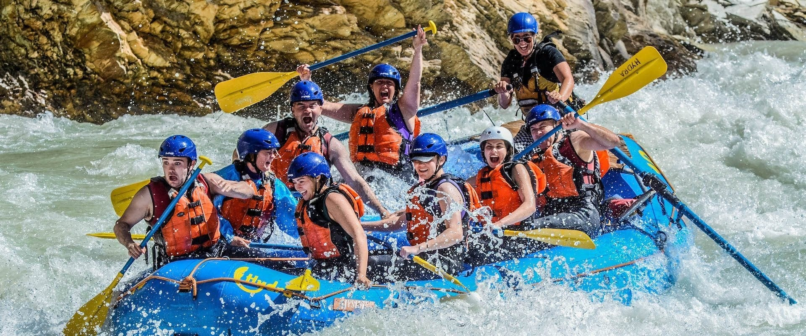

Join us for an unforgettable experience as we navigate the rivers of Peru.

Join us for an unforgettable experience as we navigate the rivers of Peru.
Rafting in Peru has a rich history dating back to ancient civilizations. It has become a popular adventure sport, attracting thrill-seekers from around the globe.